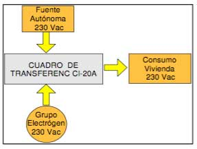
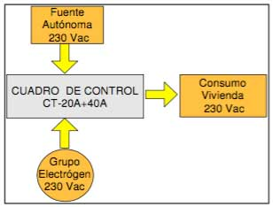
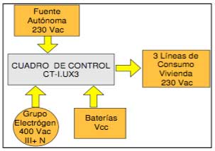

CUADROS DE PROTECCIÓN Y CONTROL
Sistemas Conectados a la Red
Aplicación de energías solar y eólica - Para Interconexión Monofásica 230 V
| Ref: | Tipo | Características |
|---|---|---|
| 11100 | RED-1 | Cuadro de Contadores para Conexión a Red a 230 V |
Caracteristicas:
Cuadro de Interconexión a Red de Distribución según Normativa vigente.
- Contador electromecánico de Energía Producida.
- Contador electromecánico de Energía Consumida.
- Protección magnetotérmica y diferencial.
- Fusibles seccionables.
- Caja de doble aislamiento.
| Especificaciones técnicas | RED-1 |
|---|---|
| Intensidad Contadores | 10 / 60 A |
| Sensibilidad Diferencial | 30 mA |
| Control de Potencia | ICP |
| Medidas | 540x360x190 |
| Peso | 4 kg |
| Temperatura de trabajo | De –40 Co a +80Co |
Para Interconexión Trifásica 380 V
| Ref: | Tipo | Características |
|---|---|---|
| 11103 | RED-3 | Cuadro de Contadores para Conexión a Red a 380 V |
Sistemas autónomos
Aplicación de energías solar y eólica - Para aplicación en protección CC
| Ref: | Tipo | Características |
|---|---|---|
| 11210 | CPC-1 | 12-48Vcc Fotovoltaico |
Características:
Cuadro de Protecciones para CC:
- Fusibles de las Baterías.
- Fusibles del Campo Solar.
- Descargadores de sobretensión.
| Ref: | Tipo | Características |
|---|---|---|
| 11231 | CPC-2 | 12-48Vcc Eólico |
| 11252 | CPC-3 | 12-48Vcc Eólico / Fotovoltaico |
Caracteristicas;
Cuadro de Protecciones para CC:
- Baterías.
- Fusibles del Campo Solar.
- Fusibles del Generador Eólico.
- Fusibles Salida Regulador Solar.
- Fusibles Salida Regulador Eólico.
- Descargadores de Sobretensión para Campo Solar.
- Descargadores de Sobretensión para Regulador Eólico.
- Freno Eólico.
Control de Transferencia automática de consumos a 230 VCA
Cuadro de protecciones de CA
| Ref: | Tipo | Características |
|---|---|---|
| 11302 | CPA-2 | Cuadro de protecciones en CA |
Características:
Cuadro de Protecciones para AC:
- Protección del convertidor.
- Contador digital de energía, potencia, lectura total y parcial.
- Línea de consumo principal .
- Diferencial + magnetotérmico.
| Ref: | Tipo | Características |
|---|---|---|
| 11303 | CPA-4 | Cuadro completo de protecciones en CA |
Características:
Cuadro de Protecciones para AC:
- Protección del convertidor.
- Contador digital de energía, potencia, lectura total y parcial.
- Lineas de consumo principal y secundaria, controladas por el estado de carga de las baterías.
- Leds de señalización de líneas de consumo activas.
- Toma de corriente II+T 230 Vac.
- Diferencial+ magnetotermico.
Control por niveles de Intensidad
| Ref: | Tipo | Características |
|---|---|---|
| 11404 | CI-20A | Control por Intensidad, 2 fuentes y 1 línea consumo |
Características:
- Fuentes: Autónoma y Grupo Electrógeno.
- Control de consumos.
- Conmutación de la fuente de generación.
- Control externo para arranque de grupo electrógeno.

Transferencia por tensión
| Ref: | Tipo | Características |
|---|---|---|
| 11204 | CT-20A+40A | Transferencia por Tensión, 2 fuentes y 1 línea consumo |
| 11205 | CT-20A+40A | Transf. Tensión, 2 fuentes y 1 l.cons. con ACTUA -12/48 LCD |
Características:
- Fuentes: Autónoma y Grupo Electrógeno.
- Control del suministro constante a una línea de consumo.
- Conmutación de la fuente de generación.

Control y Transferencia por niveles de Intensidad y tensión
| Ref: | Tipo | Características |
|---|---|---|
| 11206 | CT--I.U.+CX1 | Control de Int. y Ten., 2 fuentes, 1 cargador y 1 línea consumo |
Características:
- Fuentes: Autónoma y Grupo Electrógeno.
- Control del suministro constante a una línea de consumo.
- Conmutación de la fuente de generación.
- Control de tensión de Batería, que cuando detecta un bajo estado de carga, conmuta al Circuito Auxiliar para cargar Baterías.
- Control externo para arranque de grupo electrógenogeneración.
- Contador para línea de consumo.
- Toma de corriente.
- Protecciones para cargador CA/CC.
| Ref: | Tipo | Características |
|---|---|---|
| 11410 | CI-10A.U | Control de Intensidad y Tensión, 2 fuentes y 1 línea consumo |
Características:
- Fuentes: Autónoma y Grupo Electrógeno.
- Control del suministro constante a una línea de consumo.
- Conmutación de la fuente de generación.
- Control de tensión de Batería, que cuando detecta un bajo estado de carga, conmuta al Circuito Auxiliar para cargar Baterías.
- Control externo para arranque de grupo electrógeno.
| Especificaciones técnicas | Ref: CI-10A.U |
|---|---|
| Nº de Entradas | 2 |
| Max. Intensidad Circuitos | Ajustable hasta 20A |
| Tensión nominal | 230Vca |
| Medidas | 280x448x160 |
| Peso | 800 gr |
| Temperatura de trabajo | De –40 Cº a +80Cº |
| Transferencia | 30ms |
| Ref: | Tipo | Características |
|---|---|---|
| 11411 | CI-10A.U2 | Variante del cuadro anterior ref.: 11410, incluyendo contador |
| Ref: | Tipo | Características |
|---|---|---|
| 11420 | CT- I.UX3 | Control de Intensidad y Tensión, 2 fuentes y 3 líneas consumo |
Características:
- Fuentes: Autónoma y Grupo Electrógeno.
- Control del suministro constante a una línea de consumo.
- Conmutación de la fuente de generación.
- Control de tensión de Batería, que cuando detecta un bajo estado de carga, conmuta al Circuito Auxiliar para cargar Baterías.
- Control externo para arranque de grupo electrógeno trifásico 400 V, III+N.
- Contador para la fuente principal 230 Vac.
- Toma de corriente 230 Vac, I+N.
| Especificaciones técnicas | Ref: CI-10A.U |
|---|---|
| Nº de Entradas | 2 |
| Max. Intensidad Circuitos | Ajustable hasta 20A |
| Tensión nominal | 230Vca |
| Medidas | 610x448x160 |
| Peso | 4 kg |
| Temperatura de trabajo | De –40 Cº a +80Cº |
| Transferencia | 30ms |
Otros dimensionados según necesidades

| Ref: | Tipo | Características |
|---|---|---|
| 11421 | CT- I.UX3-3C | Control de Intensidad y Tensión, 2 fuentes y 3 líneas consumo Con 3 contadores (1 por cada línea de consumo) |